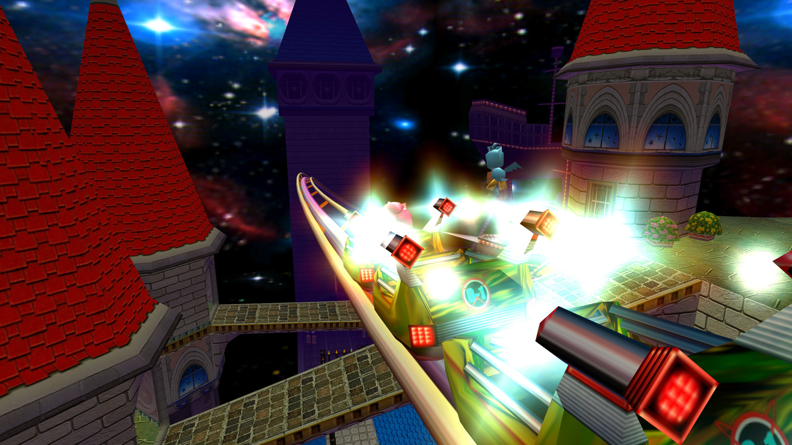
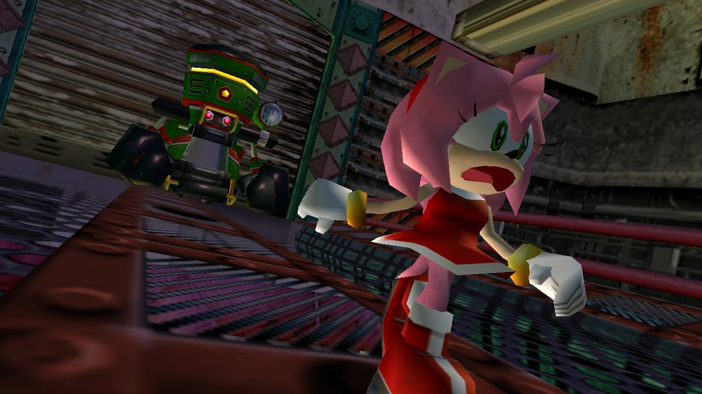
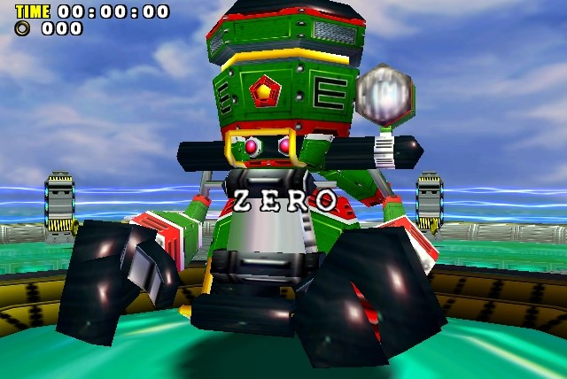
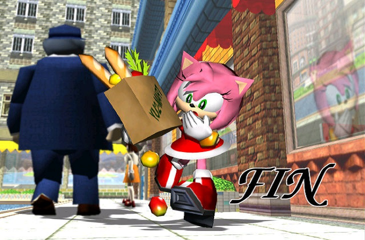

SADX - Campanha da Amy
Num fim de tarde em Station Square, Amy anda pelas ruas com algumas compras recentes, enquanto pensa em Sonic - Mais especificamente, nos eventos de Sonic CD -, e a Egg Carrier surge no céu. Repentinamente, algo surge do céu e bate em Amy, um Flicky azul. Um robô de Eggman também aparece, e ele está perseguindo o pássaro. Amy pega o bichinho e esconde-se numa loja. o robô passa reto. Amy decide ajudar o seu novo amiguinho a escapar de Eggman e seus robôs.
Ja com o controle de Amy, Vá para a Área do Casino e encontre Sonic, para explicar sobre a situação do passaro e pede que Sonic seja seu guarda-costas por um tempo. Chato como sempre, Sonic nega e sai correndo, deixando Amy para trás. Vá para Twinkle Park atrás de Sonic. Inevitavelmente, o robô de Eggman surge e Sonic encarrega-se de eliminá-lo, e Amy vê uma placa de Twinkle parque dizendo que garotas bonitas não pagam e resolve entrar para se esconder do robô. Sonic, sem muita escolha, vai atrás dela.
Stage 01 - Twinkle Park
Amy possui uma gameplay muito lenta, mas causa um dano forte com seu martelo. Alem disso, caso esteja em alta velocidade, você pode usar o martelo para dar saltos enormes com o botão de pulo, isso será muito util. Começando a fase, encontre e acione os 3 switchs que estão em volta do lago. Use o Hammer Jump para passar por cima dos barris que explodem e entre no castelo, fugindo do robô de Eggman e tentando não se confundir nas areas com espelhos, e cuidado com os buracos e espinhos no chão, o reflexo dos espelhos mostram o chão falso. Depois de detonar os macacos no final da fase, pegue o balão e termine-a.
Aparentemente Amy despistou o robô de Eggman, porem Sonic também. Num momento de guarda baixa, o robô aparece e captura Amy e vai em direção a estação, dirigindo-se a Mystic Ruins pelos trilhos do trem. No túnel, Sonic vê Amy sendo carregada. Na Egg Carrier, Amy está presa com o pássaro e o robô E-102 Gamma aparece e exige que ela entregue o pássaro. Amy recusa e Gamma questiona. Amy não fala e exige que Gamma fale porque quer o pássaro. Gamma não sabe. Amy pede ao robô para que libertem eles e ocorre um pequeno tilt em Gamma quando ele vê o pássaro mais de perto. Gamma então decide libertá-los e Amy percebe que aquele robô não é como os outros e decide ser sua amiga.
Após você sair da prisão, você encontrará o Hedgehog Hammer. Se você bater a pontuação de Eggman, ganhará o Warrior Feather. Isto dará a Amy o Spin Hammer Attack. Saia do Hedgehog Hammer e bata com o martelo no botão para abrir a porta do meio e entrar em Hot Shelter.
Stage 02 - Hot Shelter
Aqui tudo que você precisa é velocidade e raciocinio logico, seu objetivo aqui é fugir do robô de Eggman e resolver Puzzles quando aparecerem para seguir na fase. Inclusive, essa é a unica fase do jogo que o Sonic não é jogavel. Na segunda parte terá dois puzzle, ignore o robô e apenas encaixe as peças coloridas nos painéis de mesma cor. No segundo é a mesma coisa mas falta a peça azul. Use a mola e ande para a direita na viga do meio e lá estará ela escondida.
Após a fase, uma luz manda Amy para um local totalmente diferente. Dê a volta e saia da área da pirâmide, siga em frente e você verá Tikal tentando ganhar a confinça dos Chao. Um Chao aproxima-se dela e uma criatura líquida sai da água. Amy volta para a Egg Carrier, vá até a superficie. Eggman irá encurralar Amy e Sonic junto de Tails aparecem para tentar ajuda-la. Eggman pega o pássaro e tira uma Esmeralda do Caos dele e ordena que Gamma lute com Sonic. Amy pede ao robô que pare e, quando Sonic se prepara para derrotá-lo, Amy o impede dizendo que esse robô é seu amigo e a ajudou à escapar. Sonic então poupa o robô e a Egg Carrier começa a perder altitude. Sonic diz para Tails e Amy saírem rápido dali. Amy para Gamma também sair dali pois é perigoso. Gamma pergunta porque ela está ajudando-o. Ela diz que está retribuindo o favor e diz para ele não obedecer mais Eggman. Tails, Amy e Gamma escapam da nave. Tails aterrissa Amy perto da estação e os dois se despedem. Amy nota que o colar que o passarinho possui é uma foto de família. Amy decide ajudar o Flicky a achar os seus pais. Ela acredita que eles devem estar presos na base de Eggman. E-102 disse que a base fica em Mystic Ruins, ela decide ir até lá.
Antes disso, vá até o pequeno cais que há no litoral e pegue o barco. Volte ao Egg Carrier e vá ao Hedgehog Hammer e bata seu último escore. Você ganhará o Long Hammer . O Long Hammer dará a Amy um alcance maior. Em Mystic Ruins, vá para a área da floresta e para o abismo cercado até achar uma ponte. Entre na ponte. Você estará dentro da base. Resolva o puzzle e entre na Final Egg.
Stage 03 - Final Egg
O robô de Eggman ainda te perseguirá. Como antes, você precisará de velocidade. Tome cuidado com as garras que descem do teto. Pressione o switch no final do caminho para chamar o elevador. Depois do elevador vá em frente até uma sala com 5 portas, apenas uma delas fará você seguir em frente. Aqui você depende da sorte, pois a porta muda a cada vez que você joga a fase. Perto do fim da fase, onde o robô arrebenta a parede, se você estiver cercada, basta dar um Hammer Jump para alcançar o caminho que leva até o balão.
Mesmo ao fim da fase, ainda não encontramos a familia do passaro, então Amy sai a procura. Saia da base e vá para a Estação de Trem. Vá por baixo e suba na jangada. Na Egg Carrier, ela enfim encontra a família do pássaro. Isso seria um final feliz, mas o robô volta e acerta o passarinho em cheio. Amy fica 100% PUTASSA e dá uma martelada jogando ele longe. Amy decide, enfim destruir Zero.
E-100 Zero
Seu objetivo aqui é acerta-lo repetidamente até que ele encoste na cerca eletrica, assim a cabeça dele se abrirá revelando um cristal. Acerte o cristal para causar dano real a ele. Faça isso 3 vezes e ele já era. De inicio ele apenas usa tiros com mira, mas depois ele passa a usar um ataque de onda de energia, assim como Chaos. O ataque mais perigoso dele é o ataque giratório, se esquive de todos, com um pouco de pratica, você o derrota.
Depois da batalha Amy volta sua atenção ao seu amigo machucado. O pássaro se esforça e voa baixo mas parece que ele caiu no mar. Amy e os outros pássaros vão socorrê-lo, mas ele aparece voando normalmente. Finalmente os 3 podem viver em paz. Amy concluiu seu objetivo e encontrou os pais do pequeno passaro.
